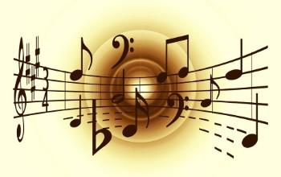

Se conoce como música a la combinación ordenada de ritmo, melodía y armonía que resulta agradable a los oídos. Por su carácter inmaterial, la música se considera un arte temporal o del tiempo, al igual que la literatura. En el sentido restrictivo, la música es el arte de coordinar y transmitir efectos sonoros, armoniosos y estéticamente válidos, los cuales son generados a través de la voz o de instrumentos musicales. |
 |
Todo sobre la música
¿Las notas músicales?
Concepto de la música
Las notas musicales representan un concepto utilizado para expresar la altura o el tono de un sonido. Las notas son nombres para ciertas frecuencias que permiten decir, que un sonido corresponde a cierta nota, es una combinación de varias notas, está entre dos notas. |
 |